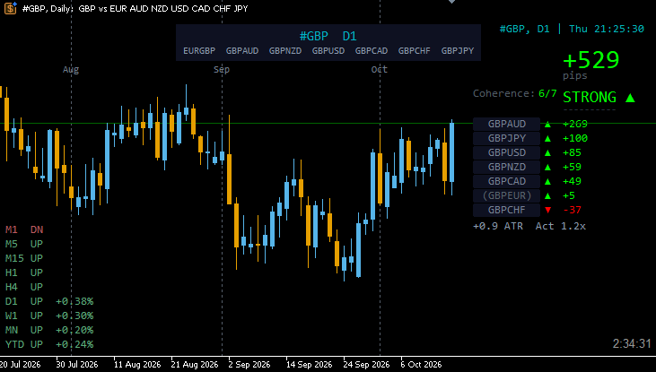

Currency-strength tools for MetaTrader 5 and TradingView. Eight currency baskets, 28 pairs, one sum: zero.
A single pair shows one currency against another. A basket shows one currency against all seven others, so you see which side of a pair is actually moving.
EUR, GBP, AUD, NZD, USD, CAD, CHF and JPY form 28 pairs. Together they cover the major forex market.
Each currency is measured against the other seven pairs at once. The basket shows its strength as one value.
What one currency gains, another loses. The eight baskets always sum to zero, which makes the ranking a closed, consistent picture.

An Expert Advisor for placing and managing trades from the chart: forex pairs, currency baskets, and other symbols such as gold, Bitcoin and stock indices. You decide on the trade; AutoQuickTrade handles size, execution and the safety checks.
AutoQuickTrade is in beta. Test versions are available to members of the Discord server.
Each tool does one job. Start with the free ones; they show the basket idea on your own charts.
Build the basket charts the other tools read.
Read strength, coherence and structure.
All eight baskets in one panel: pips per session, coherence and ranking.
Shows how many of the seven pairs carry a basket move, with volatility and activity.
Place, monitor and protect positions.
Trades on pairs, baskets, gold, Bitcoin and indices from the chart, with sizing and safety checks. Successor of One Click Basket Trade.
All open positions by group, with close controls and a daily kill switch.
Basket analysis in the browser, without installing anything. Chart Info is published open source, the Basket Viewer as a protected script. Basket Strength, Session Candles, Session Overview, Risk Meter and Engulfing follow.
Real basket charts, all 28 pairs at once and order execution, also for gold, Bitcoin and indices. MetaTrader 4 is not supported, because it cannot build synthetic charts.
A statistical study of currency basket behaviour across sessions, days and weeks: 1,512 combinations, nine strategies, more than 37 million simulated trades.
Tuesday and Wednesday matched the weekly direction in 73% of weeks. For JPY the rate was 86%.
Predicting the next session from the last one was a coin flip. The strategies that held up reacted to breakouts instead of forecasting direction.
Fridays reversed the weekly trend in 55% of weeks. For NZD, USD and JPY the rate was 62–65%.
Monday's daily candle matched the week's direction in 63% of weeks. When SMA alignment agreed on all four timeframes, the rate was 86%.
EUR and GBP showed no M15 breakout edge at any time of day. Across 760 tested time slots, the edge was limited to CHF, JPY and USD during the New York overlap.
Historical backtest on past price data. The results describe the test period and are not a forecast or a trading recommendation.
The Discord server for traders who work with currency baskets. Members discuss daily basket readings, test new tool versions before release, report bugs and get support directly from the developer.
Bug reports: post in #bug-reports with a screenshot of the Experts tab.
Free to join. Discord's privacy policy applies.
No. They measure currency strength and show the result. The Basket Viewer ranks the eight currencies and lists the pairs that combine the strongest and the weakest basket. It does not time entries or exits, and it does not place trades. Whether and how to trade is your decision.
A basket combines the seven pairs of one currency into one chart. The EUR basket, for example, shows the euro against GBP, AUD, NZD, USD, CAD, CHF and JPY at the same time.
The eight currencies form a closed system. Each of the 28 pairs appears in two baskets: as it is in the basket of its base currency, inverted in the basket of its quote currency. A pair that gains 20 pips adds +20 to one basket and −20 to the other, so across all eight baskets the values always sum to zero. Strength in one currency is always weakness somewhere else.
The rule also works as a data check. If the eight values do not sum to zero, a pair is missing or a price feed is out of date.
Synthetic Chart builds the basket charts, and the Basket Viewer shows all eight baskets in one panel. Both are free on the MQL5 Market.
They do different jobs. TradingView is for analysis in the browser, without installing anything. Use the same data source in all scripts and basket charts there.
MetaTrader 5 builds the baskets as real charts (custom symbols), keeps its state between ticks for functions like the daily kill switch, and sends orders directly to the broker. TradingView scripts have no clickable chart buttons and need a webhook bridge to place orders, so execution stays in MetaTrader 5.
MetaTrader 5 keeps the old version running until the indicator is reloaded. Remove it from the chart and add it again from the Navigator. With many charts, save one updated chart as a template and apply that template to the others.
Two baskets of eight pairs each. Every pair combines a risk-on currency (EUR, GBP, AUD, NZD) with a risk-off currency (USD, CAD, CHF, JPY); the 16 pairs are split into two sets. Measured geometrically, both baskets describe the same quantity, so the Risk Meter shows #ROFF inverted as a mirror line. A buy on #RON together with a sell on #ROFF is therefore a hedge.
No. MetaTrader 4 has no custom symbols, so it cannot build the basket charts the tools depend on.
The score shows the structure. The chart confirms the entry.
IN CHART VERITAS